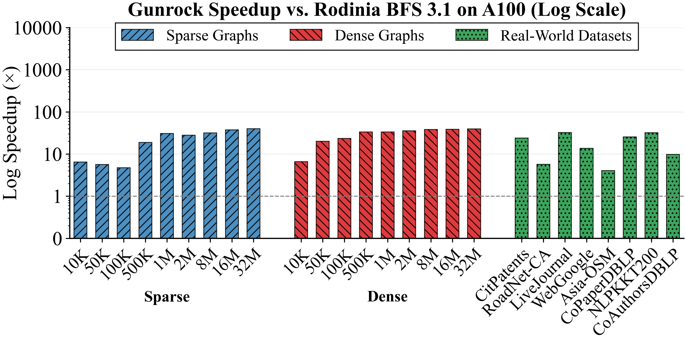
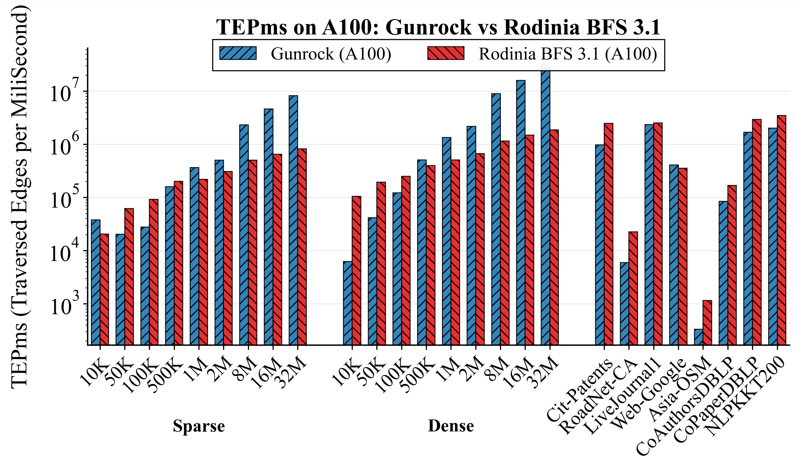
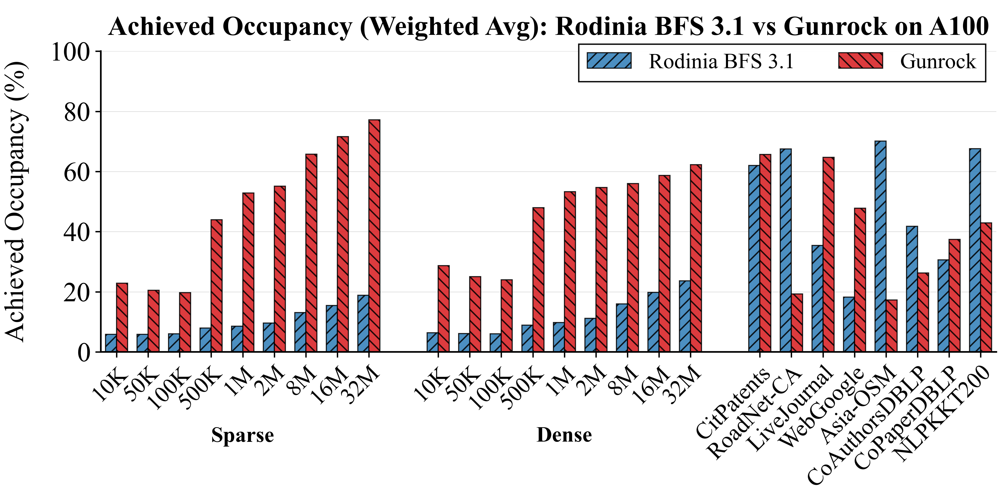

Graph traversal: Breadth-first search (BFS)
1. Intro & related work
(a) BFS Overview
GPU breadth-first search: given a graph and a source vertex, label every reachable vertex with its BFS hop distance. It appears in Rodinia as a graph traversal / irregular GPU workload for architecture and performance studies (memory divergence, short wide phases vs. long thin phases). Irregular GPU behavior is characterized quantitatively by Burtscher et al.[7].
(b) Original paper and its implementation
Paper: Harish and Narayanan - Accelerating Large Graph Algorithms on the GPU Using CUDA[1] (HiPC 2007).
Rodinia implementation: CUDA BFS in the suite follows Harish & Narayanan[1]: level-synchronous traversal with two kernels per level (expand adjacency from the frontier, then update frontier masks). Input is a single Rodinia CSR text file (vertex count, per-vertex edge ranges, source id, then edge list with weights). Output is per-vertex distances. A profiling build adds NVTX ranges for timeline tools.
Suite context: Rodinia[3][4] (rodinia.cs.virginia.edu). Wiki lineage: Graph_traversal (archived).
2. Datasets update
(a) Legacy graphs (old)
Legacy random graphs shipped with the Rodinia distribution[3] have low average degree and small random weights. They are quick to build and useful for rapid testing; however, they are not sufficiently complex or large to effectively represent real-world social or road networks.
(b) RMAT graphs (synthetic)
RMAT graphs follow the recursive matrix model of Chakrabarti, Zhan, and Faloutsos[8]
and Graph500-style benchmark practice[9].
We generate them with PaRMAT[10]:
(A,B,C)=(0.57,0.19,0.19), undirected, sorted, with no duplicate edges or self-loops. It scales from small to tens of millions of vertices. We use sparse (EF≈8) and dense (EF≈64) regimes.
(c) SNAP/DIMACS datasets
- SNAP - snap.stanford.edu/data. The collection is described by Leskovec and Krevl[11]. Examples are cit-Patents, roadNet-CA, soc-LiveJournal1, and web-Google.
- DIMACS-10 - Examples include asia_osm, coAuthorDBLP, and coPaperDBLP. Challenge graphs and methodology are in Bader et al. (eds.)[12]. Benchmarking context is in Bader et al.[13].
- Network Repository - networkrepository.com. It is documented by Rossi and Ahmed[14]. Example graph: nlpkkt200.
3. Workloads updated
(a) Original version drawbacks
The HiPC’07 vertex-parallel design[1]
launches work proportional to |V| each BFS level even when the frontier is tiny, so cost does not track frontier size. Later scalable GPU traversals reduce work per level relative to frontier size (e.g. Merrill, Garland, and Grimshaw[5]). The legacy approach can be work-inefficient on large graphs. Performance versus newer implementations varies with graph structure and GPU generation. See the Rodinia BFS Report[15].
(b) Related Work
Suite context comes from Che et al.[3][4]. For algorithm updates, Luo et al.[6] and Merrill et al.[5] motivate work-efficient frontier processing and better load distribution. Gunrock formalizes these ideas with advance and filter operators and direction-aware traversal[16]. Burtscher et al.[7] explain why irregular memory and control flow dominate GPU graph performance. Bhaskar and Kanakagiri[17] provide recent performance-oriented BFS discussion. RMAT generation at scale is supported by PaRMAT[10].
(c) Algorithm updates
- Keep legacy BFS for backward-compatible baselines.
- Add a frontier-queue CUDA path informed by Gunrock-style abstractions[16] and scaled RMAT plus real graphs.
- Use a bitmap visited set and atomic claim for first-touch discovery. This reduces duplicate enqueues and lowers memory traffic.
- Use degree-aware expansion and push or pull style phases when appropriate. This improves load balance because small and large frontier vertices are handled differently.
- Expected efficiency gain: work per level is closer to active frontier size, instead of scanning most inactive vertices each level as in the legacy mask-based design.
- Report kernel-only and end-to-end GPU time explicitly. Use NVTX and Nsight for comparable regions.
(d) Expected behavior
- Same CSR + source → same distances across implementations (validate by diff).
- The frontier version is usually faster on large RMAT graphs and many web-social graphs. Road-like or tiny-frontier-heavy runs may narrow or invert gains.
- Legacy can show high L1 hits on mask scans while doing more total work. Do not equate hit rate with throughput (see the Rodinia BFS Report[15] and irregular access patterns in Burtscher et al.[7]).
4. Parameters used and Makefile
(a) Old version parameters
CLI: ./bfs.out <graph.csr.txt> (one file). Build: make release uses -DTIMING. Typical constants are 512 threads per block and two kernels per level (Harish & Narayanan[1]).
(b) Frontier run parameters
CLI: ./bfs_gunrock_<GPU>.out <graph.csr.txt>. Makefile sets GPU (name tag) and ARCH (e.g. sm_80, sm_90). Same CSR file format. Implementation uses frontier queues, bitmap visited set, degree buckets, and push/pull-style phases informed by Gunrock[16] (see cuda/bfs/bfs_frontier/src/ in the public repository).
(c) Makefile changes and notes
The new BFS Makefile adds explicit GPU selection and modern compile flags.
- New knobs:
GPU(output name tag) andARCH(e.g.sm_80for A100,sm_90for H100). - New flags: optimized build settings such as
-O3,-lineinfo,-use_fast_math, and an explicit-arch=$(ARCH). - Notes: match
ARCHto your GPU. If you build the NVTX profiling variants and linking fails, add the NVTX link library that your CUDA toolkit requires.
Example runs
# Legacy BFS cd cuda/bfs/bfs_3.1/src make release ./bfs.out ../../../data/bfs/legacy_graphs/graph1k.txt # Frontier BFS (example: A100) cd ../../bfs_frontier/src make GPU=a100 ARCH=sm_80 ./bfs_gunrock_a100.out ../../../data/bfs/rmat_graphs/graph1M_sparse.txt
5. Data analysis
Full methodology, hardware setup, and plots: Rodinia_v4_0_BFS_Report.pdf
View prelim results (A100)

On A100, sparse RMAT speedups grow from about 5× to 6× at small sizes (10K to 100K) to about 40× at 32M vertices. The report notes a jump between 100K and 500K where speedup rises from about 4.7× to 19×, which likely reflects improved cache-hierarchy benefit at that working-set size. Dense RMAT speedups span about 7× to 40× across sizes. This indicates the frontier implementation is reducing wasted per-level work, so end-to-end runtime drops sharply as graphs scale. Real-world speedup is structure-dependent, with examples including LiveJournal and NLPKKT200 at about 32×, CitPatents at about 24×, and Asia-OSM at about 4×. The low Asia-OSM speedup suggests limited parallelism can dominate even with a better algorithm.

TEPms is an absolute throughput metric. On sparse RMAT at 32M vertices, the report shows the frontier implementation near 5×106 TEPM while Rodinia is near 9×105 TEPM. On dense RMAT at 32M vertices, the frontier implementation reaches about 1.5×107 TEPM while Rodinia is about 1.1×106 TEPM. This means the frontier implementation is traversing many more edges per unit time, which is consistent with its runtime speedups. Among real-world graphs, LiveJournal is the highest frontier throughput at about 2.5×106 TEPM. Asia-OSM is the lowest for both due to road-network structure (frontier about 103 TEPM and Rodinia about 3×102 TEPM). The report also highlights cases where Rodinia approaches or matches frontier throughput on regular-structure graphs such as CoPaperDBLP and NLPKKT200, which suggests modern BFS features provide smaller benefit when traversal is already regular.

Achieved occupancy measures the fraction of active warps relative to the hardware maximum. The report shows the frontier implementation is typically about 2× to 4× higher than Rodinia BFS 3.1 on most graphs, which explains a large part of its performance advantage. On synthetic RMAT graphs, Rodinia remains below about 25% because it launches |V| threads per level and most threads exit after a mask check. The frontier implementation sustains about 44% to 77% by launching work proportional to the active frontier. On some real-world graphs, Rodinia can be unusually high (for example Asia-OSM and NLPKKT200) because regular structure reduces divergence. In those cases, the frontier implementation can be lower due to load-balancing overhead on already-balanced workloads. CoAuthorsDBLP shows the opposite pattern, where frontier occupancy is much higher due to skewed degrees.
6. Conclusions & code
Ship both legacy and frontier BFS with diverse datasets and explicit metrics so studies can compare eras of algorithms and still stress current GPUs. The preliminary A100 results show the frontier implementation can deliver large speedups on scaled RMAT and many real-world graphs, with higher edge throughput and higher achieved occupancy. At the same time, the results remain structure-dependent and some graphs show smaller gains. Keeping both implementations helps separate algorithm effects from graph-topology and architecture effects.
View reproducible commands
References
- P. Harish and P. J. Narayanan, “Accelerating Large Graph Algorithms on the GPU Using CUDA,” in Proc. IEEE Int. Conf. on High Performance Computing (HiPC), 2007. DOI: 10.1109/HiPC.2007.369349.
- S. Che, M. Boyer, J. Meng, D. Tarjan, J. W. Sheaffer, S.-H. Lee, and K. Skadron, “Rodinia: A Benchmark Suite for Heterogeneous Computing,” in Proc. IEEE Int. Symp. on Workload Characterization (IISWC), 2009, pp. 44-54.
- S. Che, J. W. Sheaffer, M. Boyer, L. G. Szafaryn, L. Wang, and K. Skadron, “A Characterization of the Rodinia Benchmark Suite with Comparison to Contemporary CMP Workloads,” in Proc. IEEE Int. Symp. on Workload Characterization (IISWC), 2010.
- D. Merrill, M. Garland, and A. Grimshaw, “Scalable GPU Graph Traversal,” in Proc. ACM SIGPLAN Symp. on Principles and Practice of Parallel Programming (PPoPP), 2012, pp. 117-128.
- L. Luo, M. K. Wong, and W.-m. Hwu, “An Effective GPU Implementation of Breadth-First Search,” in Proc. 47th ACM/IEEE Design Automation Conf. (DAC), 2010, pp. 52-55.
- M. Burtscher, R. Nasre, and K. Pingali, “A Quantitative Study of Irregular Programs on GPUs,” in Proc. IEEE Int. Symp. on Workload Characterization (IISWC), 2012, pp. 141-150.
- D. Chakrabarti, Y. Zhan, and C. Faloutsos, “R-MAT: A Recursive Model for Graph Mining,” in Proc. SIAM Int. Conf. on Data Mining (SDM), 2004, pp. 442-446.
- Graph500 Steering Committee, “Graph500 Benchmark Specifications,” graph500.org (accessed 2026). See specification PDFs for R-MAT parameters and TEPS metrics.
- F. Khorasani, M. E. Belviranli, R. Gupta, and L. N. Bhuyan, “PaRMAT: A Parallel Generator for Large R-MAT Graphs,” arXiv:1511.04218, 2015/2017. arxiv.org/abs/1511.04218.
- J. Leskovec and A. Krevl, “SNAP Datasets: Stanford Large Network Dataset Collection,” Stanford University, Jun. 2014. snap.stanford.edu/data.
- D. A. Bader, H. Meyerhenke, P. Sanders, and D. Wagner (eds.), Graph Partitioning and Graph Clustering: 10th DIMACS Implementation Challenge Workshop, Contemporary Mathematics 588, AMS and DIMACS, 2013.
- D. A. Bader et al., “Benchmarking for Graph Clustering and Partitioning,” in Encyclopedia of Social Network Analysis and Mining, Springer, 2014, pp. 73-82.
- R. A. Rossi and N. K. Ahmed, “The Network Data Repository with Interactive Graph Analytics and Visualization,” in Proc. AAAI Conf. on Artificial Intelligence, 2015. networkrepository.com.
- H. Nguyen, “Modernizing Breadth-First Search in Rodinia v4.0 for Contemporary GPUs,” Capstone / graduation report, Dept. of Computer Science, University of Virginia, Spring 2025 (advisor: K. Skadron).
- Y. Wang et al., “Gunrock: A High-Performance Graph Processing Library on the GPU,” in Proc. ACM SIGPLAN Symp. on Principles and Practice of Parallel Programming (PPoPP), 2016, pp. 11:1-11:12.
- M. Bhaskar and R. Kanakagiri, “Performance-Driven Optimization of Parallel Breadth-First Search,” arXiv:2503.00430, 2025. arxiv.org/abs/2503.00430.